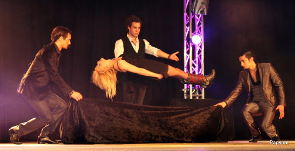

Le Lys d'or de la magie et ses magiciens de l’espoir
Conjointement, nous décidons de réunir des magiciens de l'Espoir pour créer le "Lys d'or de la Magie".
Grace à ce show nous souhaitons promouvoir l'art magique et agir dans l'humanitaire (la moitié des bénéfices est reversée au profit des malades).
Les 5 années précédentes, "Le Lys d'or de la Magie" a rassemblé plus de 40 magiciens de l'espoir de notoriété internationale.
Tous ce sont investis sur scène et dans le combat contre la maladie.
Plusieurs de ces magiciens ont été reconnus dans leur art par des passages télévisés notamment dans les émissions "Le plus grand cabaret du monde", la finale de " La France a un Incroyable Talent" et lors du championnat d'Europe de Magie.

Nous sommes fiers de cet événement qui est à la fois un grand spectacle et à la fois un moment de partage exceptionnel.